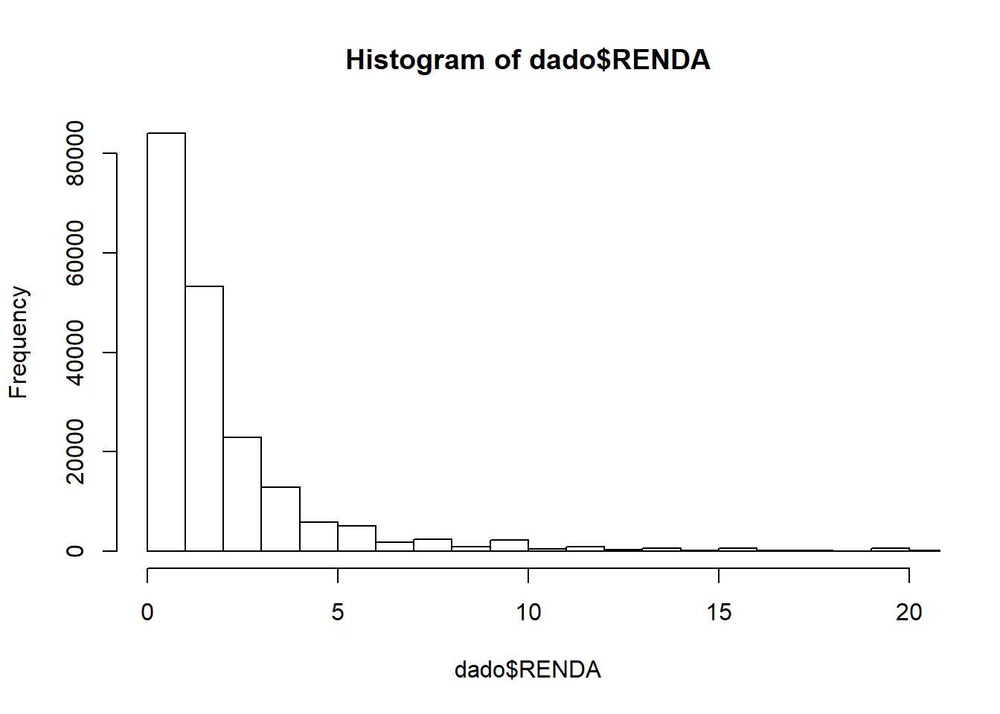
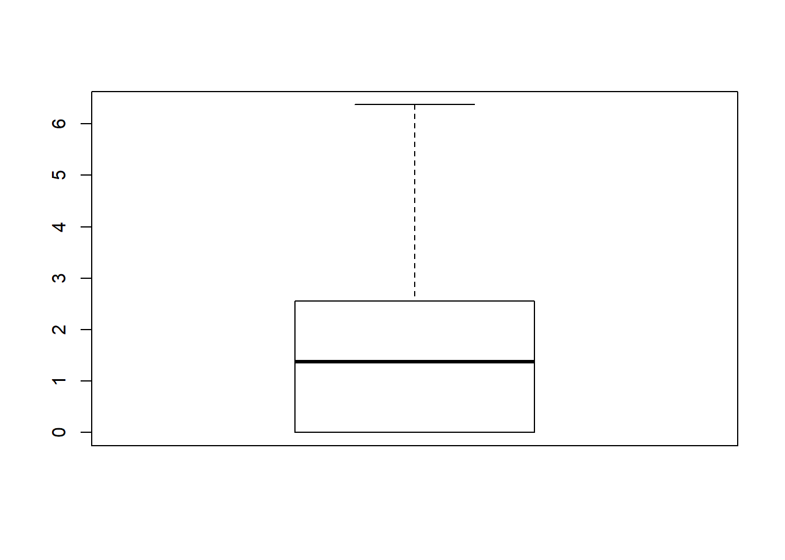

Trabalhar com bancos de dados em R não difere muito de outros softwares estatísticos, como Stata, SPSS, SAS, etc. De uma maneira geral, são feitas as mesmas operações: leitura, escrita, criação de variáveis auxiliares, filtragens de casos, seleção de variáveis, reformatação do banco, etc.
Há apenas duas coisas que alguém que já trabalhou com bancos de dados antes precisa saber: traduzir a operação para o R, utilizando a função adequada, com os argumentos necessários e trabalhar com a memória RAM do computador.
A melhor maneira de ilustrar essa ideia de tradução é pensar em algumas operações que realizamos de maneira corriqueira em nossos bancos de dados. Uma das operações mais comuns é a utilização de frequências de variáveis categóricas. No SPSS utilizariamos a Interface Gráfica para ir até Analisar > Frequencias > Selecionamos uma variável > Selecionamos opções > Executamos. Ou, utilizamos a linha de comando para executar a mesma operação.
No R, utilizariamos a função table, e faríamos:
## Sepal.Length Sepal.Width Petal.Length Petal.Width Species
## 1 5.1 3.5 1.4 0.2 setosa
## 2 4.9 3.0 1.4 0.2 setosa
## 3 4.7 3.2 1.3 0.2 setosa
## 4 4.6 3.1 1.5 0.2 setosa
## 5 5.0 3.6 1.4 0.2 setosa
## [ reached 'max' / getOption("max.print") -- omitted 145 rows ]##
## setosa versicolor virginica
## 50 50 50O que nos informa que no banco de dados “iris” foram feitas medidas para 50 flores de cada uma das 3 espécies setosa, versicolor e virginica.
De maneira geral, se você já trabalhou com algum pacote estatístico antes, a questão é realmente aprender qual o comando adequado para realizar a mesma operação em R.
Bancos de dados vem em vários formatos, alguns deles proprietários dos softwares que os utilizam, mas podemos classificá-los em basicamente dois tipos: delimitados e largura fixa.
Em bancos de dados delimitados temos uma estrutura da seguinte forma
df <- data.frame(a = letters[1:10],
b = 1:10,
c = rep(c(TRUE, FALSE), 5))
write.table(df, sep = ";", row.names = FALSE)## "a";"b";"c"
## "a";1;TRUE
## "b";2;FALSE
## "c";3;TRUE
## "d";4;FALSE
## "e";5;TRUE
## "f";6;FALSE
## "g";7;TRUE
## "h";8;FALSE
## "i";9;TRUE
## "j";10;FALSENote que o resultado de write.table(), que exploraremos mais adiante, é um banco de dados em que as colunas estão separadas por ;.
Em bancos de dados largura fixa ou colunado, o dado está guardado na forma de sequências longas de números que precisam ser interpretados segundo um arquivo dicionário que informa em que posição encontra-se cada informação. Assim são os dados do IBGE.
df <- data.frame(a = 1:10,
b = 1:10,
c = rep(c(1, 0), 5))
write.table(df, sep = "", row.names = FALSE, col.names = FALSE)## 111
## 220
## 331
## 440
## 551
## 660
## 771
## 880
## 991
## 10100O formato desse segundo write.table exigiria que conhecessemos a posição de cada informação, para poder lê-la adequadamente, peço que ignorem a décima linha por enquanto. Vamos começar então a ler alguns bancos de dados.
Para praticar, descompactem o arquivo extrato_censo.7z e vamos começar a ler os arquivos. A função que vamos utilizar se chama read.table.
## UF MUNIC PESO SEXO IDADE EDUC RENDA
## 1 35 1608 11.287026 2 57 4 9.80392
## 2 35 1608 8.446364 2 46 4 6.27451
## 3 35 1608 8.446364 1 48 4 9.80392
## [ reached 'max' / getOption("max.print") -- omitted 226902 rows ]Notem que o único argumento que utilizamos foi file para indicar o caminho do arquivo.
Vamos abrir um parêntese aqui para aprender como trabalhar com caminhos de arquivo em R.
Vejam que quando chamei a função read.table, eu não precisei especificar o caminho do arquivo, apenas o seu nome. Isso se chama caminho relativo. O R armazena uma variável chamada working directory ou pasta de trabalho, que pode ser vista ou modificada usando os seguintes comandos:
## [1] "C:/Users/vinic/Documents/R/oficina-de-r"getwd() informa qual a atual pasta de trabalho, enquanto setwd() modifica a pasta de trabalho de acordo com o valor informado.
A qualquer momento, você também utilizar o caminho absoluto de um arquivo.
dado <-
read.table("C:/Users/vinic/Documents/R/oficina-de-r/01_extrato_censo_2010.txt")
print(dado, max = 25)## UF MUNIC PESO SEXO IDADE EDUC RENDA
## 1 35 1608 11.287026 2 57 4 9.80392
## 2 35 1608 8.446364 2 46 4 6.27451
## 3 35 1608 8.446364 1 48 4 9.80392
## [ reached 'max' / getOption("max.print") -- omitted 226902 rows ]Se você está no RStudio, você vai notar que ele tem duas ferramentas que nos ajudam a trabalhar com caminhos de arquivo. Uma é autocompletar caminhos de pasta quando você abre ". E a outra é a criação de R Projects, que pode ser encontrada na parte superior esquerda da interface. Experimente criar um projeto para este curso, apontando uma pasta (que você pode criar) onde ficarão guardados os arquivos que vamos utilizar.
Vamos tentar abrir o segundo arquivo delimitado, "02_extrato_censo_2010.txt".
## V1 V2
## 1 UF ,"MUNIC","PESO","SEXO","IDADE","EDUC","RENDA"
## 2 1 ,"35","01608",11.2870255906736,"2",57,"4",9.80392
## 3 2 ,"35","01608",8.4463640405632,"2",46,"4",6.27451
## 4 3 ,"35","01608",8.4463640405632,"1",48,"4",9.80392
## 5 4 ,"35","01608",7.8222591662318,"2",39,"3",3.92157
## 6 5 ,"35","01608",7.8222591662318,"2",14,"1",0
## 7 6 ,"35","01608",11.5416196380749,"2",69,"3",0.58824
## 8 7 ,"35","01608",8.5037192050286,"2",76,"1",0
## 9 8 ,"35","01608",8.5037192050286,"1",82,"1",6.47059
## 10 9 ,"35","01608",7.6531890642122,"1",17,"2",0
## 11 10 ,"35","01608",7.6531890642122,"1",47,"4",29.41176
## 12 11 ,"35","01608",11.3748043237706,"1",58,"4",1.96078
## [ reached 'max' / getOption("max.print") -- omitted 226894 rows ]Veja nossa operação não resultou num banco de dados organizado. Foram lidas apenas 2 variáveis, V1 e V2 e os dados ficaram desorganizados. O que ocorre é um problema com o separador das colunas. read.table tem um valor padrão igual " " para o separador de colunas, o que significa que ele entende um espaço em branco como a separação entre os dados. Nesse banco de dados, veja que as colunas estão separadas por ,. Então, para lê-lo adequadamente, escrevemos:
## UF MUNIC PESO SEXO IDADE EDUC RENDA
## 1 35 1608 11.287026 2 57 4 9.80392
## 2 35 1608 8.446364 2 46 4 6.27451
## 3 35 1608 8.446364 1 48 4 9.80392
## [ reached 'max' / getOption("max.print") -- omitted 226902 rows ]Vamos tentar ler o arquivo "05_extrato_censo_2010.txt".
## UF MUNIC PESO SEXO IDADE EDUC RENDA
## 1 35 1608 11,2870255906736 2 57 4 9,80392
## 2 35 1608 8,4463640405632 2 46 4 6,27451
## 3 35 1608 8,4463640405632 1 48 4 9,80392
## [ reached 'max' / getOption("max.print") -- omitted 226902 rows ]Até que conseguimos ler o banco de dados, mas veja que nossas variáveis númericas PESO e RENDA estão com o tipo factor, utilizado para variáveis categóricas. Isto ocorre porque ele leu as vírgulas nos números de maneira incorreta. Para corrigir este erro, utilizamos o argumento opcional dec = "," que muda o separador de casas decimais:
## UF MUNIC PESO SEXO IDADE EDUC RENDA
## 1 35 1608 11.287026 2 57 4 9.80392
## 2 35 1608 8.446364 2 46 4 6.27451
## 3 35 1608 8.446364 1 48 4 9.80392
## [ reached 'max' / getOption("max.print") -- omitted 226902 rows ]Leiam o resto dos bancos de dados utilizando os separadores de colunas e decimais adequados.
Um dos bancos de dados mais importantes para os demógrafos é corriqueiramente publicado pelo IBGE no formato largura-fixa, acompanhado de um arquivo de leiaute que informa as posições das variáveis e os seus valores possíveis. Para tanto, descompactem o arquivo "censo2010SPOutros.7z".
Abrir arquivos de largura fixa é um processo bastante trabalhoso, é necessário consultar a posição de cada variável no arquivo de leiaute, bem como aplicar um passo posterior para separar os valores decimais.
Normalmente, você executaria este trabalho usando a função read.fwf, mas esta função tem uma versão melhorada, mais rápida e fácil de usar, chamada read_fwf. Ela, no entanto, encontra-se em um pacote que não está no R Base e precisa ser instalado a parte. Vamos então, abrir um parêntese para aprender a instalar pacotes em R.
Instalar pacotes ou bibliotecas em R é extremamente fácil, você só precisa saber o nome do pacote e seguir um desses dois caminhos:
Pela interface gráfica, clique na aba “Packages” e clique em Install. Na Janela que se abriu, digite o nome do pacote e clique no botão Install.
Pela linha de comando, utilize o comando install.packages("pacote"), como no exemplo a seguir:
Se tudo correr bem durante a instalação, é só começar a usar o pacote.
Ok, agora que já temos o pacote readr instalado na nossa versão do R, precisamos carregar ele no Namespace do R. Esse treco aí é apenas para dizer que o R passa a reconhecer os nomes do pacote (no nosso caso, interessa que ele reconheça o read_fwf) quando você os digitar. Vamos ver, execute o código a seguir linha por linha e veja o console:
## Parsed with column specification:
## cols(
## V0001 = col_double()
## )## # A tibble: 25 x 1
## V0001
## <dbl>
## 1 14
## 2 14
## 3 14
## 4 14
## 5 14
## 6 14
## 7 14
## 8 14
## 9 14
## 10 14
## # ... with 15 more rowsVejam que os códigos são idênticos, mas no primeiro caso, o R não consegue encontrar a função read_fwf, pois ele não está no Namespace. O comando library() carrega o pacote readr e permite que o R encontre a função.
Para que esta função leia o nosso banco, precisamos especificar a posição das variáveis no banco, que está descrito no arquivo de leiaute. Como exemplo, vamos ler as primeiras 3 variáveis que encontramos nos nossos arquivos delimitados, UF, MUNICÍPIO e PESO AMOSTRAL.
dado <- read_fwf(
file = "Amostra_Pessoas_14.txt",
fwf_cols(
UF = c(1, 2),
MUNIC = c(3, 7),
PESO = c(29, 44)
),
col_types = cols_only(
UF = col_character(),
MUNIC = col_character(),
PESO = col_double()
),
n_max = 1000)
print(dado, max = 25)## # A tibble: 1,000 x 3
## UF MUNIC PESO
## <chr> <chr> <dbl>
## 1 14 00027 3.24e13
## 2 14 00027 3.24e13
## 3 14 00027 8.21e13
## 4 14 00027 8.21e13
## 5 14 00027 8.21e13
## 6 14 00027 8.21e13
## 7 14 00027 8.21e13
## 8 14 00027 8.21e13
## 9 14 00027 3.95e13
## 10 14 00027 3.95e13
## # ... with 990 more rowsNote que além de especificar as posições das variáveis fwf_cols(nome = c(início, fim)), eu fiz questão de especificar também os tipos das colunas col_types = cols_only(nome = col_tipo()), porque não quero que ele interprete os valores de UF e MUNIC como números, já que são códigos de estados e municípios e também específico que peso é uma variável númerica. Porém, Isto é insuficiente, já que PESO não está com as suas casas decimas! Veja que PESO tem 3 casas antes da vírgula e 13 casas após. Então, precisamos fazer:
## # A tibble: 1,000 x 3
## UF MUNIC PESO
## <chr> <chr> <dbl>
## 1 14 00027 3.24
## 2 14 00027 3.24
## 3 14 00027 8.21
## 4 14 00027 8.21
## 5 14 00027 8.21
## 6 14 00027 8.21
## 7 14 00027 8.21
## 8 14 00027 8.21
## 9 14 00027 3.95
## 10 14 00027 3.95
## # ... with 990 more rowsInfelizmente, o R base não tem um jeito muito elegante de lidar com as casas decimais no banco de dados do IBGE, então é necessário repetir este passo para todas as suas variáveis númericas que tenham casas decimais. Note que dado$PESO é a nossa forma de referênciar o vetor PESO que está armanzenado no data.frame dado e, se assim desejarmos, fazer alterações nele.
Muitas vezes, este é nosso último passo, para salvar tabelas ou bancos de dados atualizados após concluirmos nossas análises, porém, vamos aproveitar que o read.table está fresco na nossa memória aprender a usar seu primo, write.table, já que eles são muito similares.
Agora abra na sua pasta o arquivo que você criou e veja que formato ele assumiu.
Utilize os argumentos sep e dec para gravar o banco de dados dado em todos os formatos que os bancos "XX_extrato_censo_2010.txt" têm e nomeie os arquivos segundo a mesma lógica, de 01 a 07.
Para visualizar os bancos de dados, vamos utilizar o nosso arquivo "06_extrato_censo_2010.txt". Como já sabemos o formato do arquivo, podemos utilizar a função auxiliar read.csv2, que é uma versão de read.table com valores pré-definidos para sep e dec.
dado <- read.csv2(
file = "06_extrato_censo_2010.txt",
colClasses = c(
UF = "character",
MUNIC = "character",
SEXO = "character",
EDUC = "character"))Podemos visualizar nossos dados em R de várias formas. Podemos imprimí o objeto no console digitando o seu nome ou utilizando a função print.
Também podemos abrir uma visualização ao estilo Excel, com algumas funcionalidades como filtros para as linhas e colunas com View, mas atenção, não é possível alterar manualmente os valores.
Outra forma de “visualizar” nossos dados é utilizar medidas resumo da distribuição das variáveis, como médias e variáveis de distribuição. Experimente as seguintes funções sobre a variável numérica de renda. Algumas dessas funções também tem métodos para variáveis não numéricas, como summary. Estamos trabalhando sem considerar a necessidade de ponderar os valores.
## [1] 2.348011## [1] 1.37255## [1] 39.438## [1] 6.279968## [1] 0.000 1085.294## 0% 25% 50% 75% 100%
## 0.00000 0.00000 1.37255 2.54902 1085.29412## Min. 1st Qu. Median Mean 3rd Qu. Max. NA's
## 0.000 0.000 1.373 2.348 2.549 1085.294 29550Outra forma é fazer isto graficamente. Trabalhar com gráficos em R requer um pouco mais de aprofundamento nos argumentos opcionais das funções, porém, os resultados são muito interessantes e informativos.


Essencialmente, a visualização de dados em R não é muito distinta de outros softwares. Geralmente, é mais proveitoso analisar medidas resumo e representações gráficas do que inspecionar microdados individualmente.
Frequentemente, trabalhamos com grandes bancos de dados que contém informações, lugares ou pessoas que não tem relevância para a nossa pergunta de pesquisa. Para operacionalizar nossas questões, é necessário então selecionar casos relevantes e descartar outros. Esta é uma operação tão básica e frequente, que há múltiplos pacotes em R que apresentam soluções para isto. Aqui, vou me ater ao jeito []. O bom do jeito [] é que ele sempre funciona, independente do pacote que você está utilizando e ele oferece um conhecimento fundamental que você pode depois traduzir para outros pacotes de processamento de dados como o data.table e o dplyr.
[] É a função Extract. Ela serve para “pescar” elementos dentro de um objeto ou modificar partes dele. É ela que vamos utilizar para fazer nossas seleções, mas primeiro, vamos entender como ela funciona.
## [1] 1## [1] 5## [1] 2 3 4 5 6 7 8 9 10## [1] 1 2 3 4 5 6 7 8 9## [1] 6 7 8 9 10## [1] 1 2 3 4 5 6 7 9 10## [1] 6 7## vetor1
## 1 1
## 2 2
## 3 3
## 4 4
## 5 5
## 6 6
## 7 7
## 8 8
## 9 9
## 10 10## vetor2
## 1 A
## 2 B
## 3 C
## 4 D
## 5 E
## 6 F
## 7 G
## 8 H
## 9 I
## 10 J## [1] 1## [1] J
## Levels: A B C D E F G H I J## vetor1 vetor2
## 6 6 F
## 7 7 G
## 8 8 H
## 9 9 I
## 10 10 J## [1] A B C D E
## Levels: A B C D E F G H I J## vetor1 vetor2
## 6 6 F
## 7 7 G
## 8 8 H
## 9 9 I
## 10 10 J## vetor1 vetor2
## 6 6 F
## 8 8 H
## 9 9 I
## 10 10 J## vetor1 vetor2
## 1 1 A
## 2 2 B
## 3 3 C
## 4 4 D
## 9 9 I
## 10 10 JBasicamente, ela funciona na lógica x[i, j, k, ...], onde x é o nosso objeto e i, j e as outras letras representam as dimensões desse objeto. Quando usamos números (índices), ele acessa as partes do objeto pela sua posição, mas quando utilizamos testes lógicos (> < >= <= & | == !=, etc), ele extrai as partes do objeto cujo resultado do teste é TRUE e exclui os restantes. Lembrem-se que a chamada sempre deve respeitar as dimensões do objeto, por isso é obrigatório o uso da vírgula quando usar []em data.frames, mesmo que queiramos utilizar todas as colunas. Vamos ver outro exemplo com nosso extrato do censo.
# Selecionando casos
dado[dado$MUNIC == "09502", ] # Município de Campinas
dado[dado$MUNIC == "09502" & dado$EDUC == "1", ] # População sem instrução
dado[dado$MUNIC == "09502" & dado$IDADE >= 18 & dado$IDADE <= 70, ] # Eleitores obrigatórios
# Selecionando variáveis
dado[, c("UF", "MUNIC", "PESO", "RENDA")]
dado[, "MUNIC"]
# Selecionando casos e variáveis
dado[dado$MUNIC == "09502" & dado$IDADE >= 15 & dado$IDADE < 65, # Casos [i]
c("PESO", "EDUC", "RENDA")] # Variáveis [j]
# Salva num outro objeto
campinas <- dado[dado$MUNIC == "09502", ]
campinasA utilização de variações do código acima nos permite selecionar casos e variáveis de praticamente qualquer tipo de banco de dado carregado em R. A lógica é a mesma. Os pacotes data.table e dplyr oferecem soluções alternativas para estas operações, ambos tem seus próprios méritos.
A outra operação extremamente comum com bancos de dados é a criação de variáveis auxiliares a partir dos valores das variáveis originais. O salário mínimo vigente em 2010 era de R$ 510. Com isso, podemos fazer uma variável RENDA2.
A mesma notação que utilizamos para referenciar variáveis $ pode ser utilizada para criar novas variáveis também. Caso queiramos remover esta nova variável, podemos fazer:
Juntando um pouco esta seção a anterior, podemos calcular medidas resumo para casos selecionados. Por exemplo, podemos calcular a renda média para cada nível educacional distinto e por sexo (agora com pesos).
library(questionr)
# Educação
grupo1 <- dado[dado$EDUC == "1", ]
wtd.mean(grupo1$RENDA, weights = grupo1$PESO, na.rm = TRUE)## [1] 1.228536## [1] 1.653794## [1] 2.551411## [1] 7.785246## [1] 1.313933# Sexo e educação
grupo1m <- dado[dado$EDUC == "1" & dado$SEXO == "1", ]
wtd.mean(grupo1m$RENDA, weights = grupo1m$PESO, na.rm = TRUE)## [1] 1.642161grupo1f <- dado[dado$EDUC == "1" & dado$SEXO == "2", ]
wtd.mean(grupo1f$RENDA, weights = grupo1f$PESO, na.rm = TRUE)## [1] 0.8336615grupo2m <- dado[dado$EDUC == "2" & dado$SEXO == "1", ]
wtd.mean(grupo2m$RENDA, weights = grupo2m$PESO, na.rm = TRUE)## [1] 2.233362grupo2f <- dado[dado$EDUC == "2" & dado$SEXO == "2", ]
wtd.mean(grupo2f$RENDA, weights = grupo2f$PESO, na.rm = TRUE)## [1] 1.065546grupo3m <- dado[dado$EDUC == "3" & dado$SEXO == "1", ]
wtd.mean(grupo3m$RENDA, weights = grupo3m$PESO, na.rm = TRUE)## [1] 3.404042grupo3f <- dado[dado$EDUC == "3" & dado$SEXO == "2", ]
wtd.mean(grupo3f$RENDA, weights = grupo3f$PESO, na.rm = TRUE)## [1] 1.731201grupo4m <- dado[dado$EDUC == "4" & dado$SEXO == "1", ]
wtd.mean(grupo4m$RENDA, weights = grupo4m$PESO, na.rm = TRUE)## [1] 10.42245grupo4f <- dado[dado$EDUC == "4" & dado$SEXO == "2", ]
wtd.mean(grupo4f$RENDA, weights = grupo4f$PESO, na.rm = TRUE)## [1] 5.539519grupo5m <- dado[dado$EDUC == "5" & dado$SEXO == "1", ]
wtd.mean(grupo5m$RENDA, weights = grupo5m$PESO, na.rm = TRUE)## [1] 1.670011grupo5f <- dado[dado$EDUC == "5" & dado$SEXO == "2", ]
wtd.mean(grupo5f$RENDA, weights = grupo5f$PESO, na.rm = TRUE)## [1] 0.9509576*** Caso você não tenha o pacote questionr basta instalar como indicado anteriormente ***
Falamos sobre tipos de bancos de dados, delimitados e largura fixa. Experimentamos ler bancos de dados de diferentes usando read.table e read_fwf. No caminho, instalamos nosso primeiro pacote. Fizemos também a escrita de bancos de dados utilizando write.table. Vimos como é possível visualizar os nossos dados utilizando medidas resumo e gráficos. Selecionamos casos e variaveis utilizando []. Criamos variáveis derivadas utilizando $. Calculamos algumas medidas resumo após realizar a seleção de casos.
Há uma atividade no classroom para ser realizada pra quarta feira, envolvendo banco de dados.